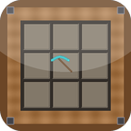

Offline sandbox crafting recipes, 3x3 grid visualizer, mobs, blocks & brewing guide for iOS 5–10
BlockGuide is a comprehensive, 100% offline crafting and survival encyclopedia for block-building games on iOS 5–10. Browse hundreds of crafting and smelting recipes with an interactive 3x3 crafting table visualizer, tap any ingredient to jump to its recipe, look up mob health/drops/biomes, search block IDs and blast resistance, and follow step-by-step potion brewing formulas.
Unofficial apps by samcejko, not affiliated with or endorsed by Twitch, Google, Apple, TikTok, Instagram, Meta, Spotify, Kick, NVIDIA, Mojang, Microsoft, OpenRouter, Vine, X, diVine or the Moonlight, Sunshine and Apollo projects.